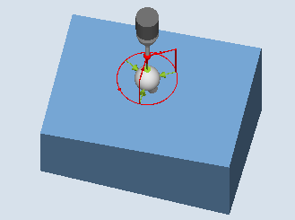

Mit dieser Messvariante kann eine Kugel vermessen werden. Das Vermessen kann achsparallel oder auf einer Kreisbahn im WKS erfolgen.
Aus 3 oder 4 Messpunkten am Umfang und einem Messpunkt am "Nordpol" der Kugel (höchster Punkt) wird der Mittelpunkt (Lage der Kugel) bei bekanntem Durchmesser bestimmt. Mit der Auswahl "Kugeldurchmesser bestimmen" und "keine Messwiederholung", wird mit einer zusätzlichen Messung der Kugeldurchmesser korrekt ermittelt.
Erfolgt die Auswahl "Kugeldurchmesser bestimmen" und "mit Messwiederholung", wird die zusätzlichen Messung nur im 1. Durchlauf ausgeführt.
Im 2. Durchlauf (Wiederholungsdurchlauf) wird der Durchmesser intern berechnet ohne Zusatzmessung.
Der Messzyklus CYCLE997 kann die Kugel vermessen und zusätzlich eine Nullpunktverschiebung (NV) aufgrund der Lage der Kugelmitte automatisch in den translatorischen Verschiebungen der 3 Achsen der aktiven Ebene korrigieren.
Die nachfolgende Beschreibung bezieht sich auf die Bearbeitungsebene G17:
Achsen der Ebene: XY
Werkzeugachse: Z
Ausgehend von der Startposition wird zuerst in -X und danach in -Z auf den Sollwert des Äquators der Kugel gefahren. Auf dieser Messhöhe erfolgt die Messung von 3 oder 4 Messpunkten.
| Messen: Kugel (CYCLE997), |  Messen: Kugel (CYCLE997), |
Messvariante Positionieren "achsparallel":
Bei der Positionierung zwischen Messpunkten (z. B. P1-> P2, P2->P3) wird immer auf die Startposition (am Nordpol der Kugel) zurückgefahren.
Mit dem Antastwinkel α0 (Startwinkel) wird die Winkellage beim Messen von Messpunkt P1 festgelegt
Messvariante Positionieren "auf Kreisbahn":
Die Positionierung zwischen Messpunkten (z. B. P1-> P2, P2->P3) erfolgt auf einer Kreisbahn auf der Höhe des Äquators der Kugel.
Mit dem Antastwinkel α0 (Startwinkel) wird die Winkellage beim Messen von Messpunkt P1 festgelegt; mit α1 der Fortschaltwinkel nach P2 und weiter nach P3 und bei Messvariante mit 4 Messpunkten nach P4.
Die Anzahl der Messpunkte multipliziert mit dem Fortschaltwinkel α1 darf 360 Grad nicht überschreiten.
Aus diesen Messwerten wird intern der Ist-Mittelpunkt des Kreises XY bestimmt (Kugelmitte in der Ebene). Danach wird mit +Z und in XY auf den berechneten "Nordpol" der Kugel gefahren. Dort erfolgt eine Messung in –Z.
Aus den Messpunkten wird der komplette Ist-Kugelmittelpunkt in den 3 Achsen der Ebene (XYZ) berechnet.
Bei einer Messwiederholung wird auf dem exakten Äquator der Kugel (aus der 1. Messung) gefahren und gemessen, was zu einer Verbesserung des Messergebnisses führt.
Soll außer dem Kugelmittelpunkt auch der Ist-Kugeldurchmesser gemessen werden, so erfolgt im 1. Messdurchlauf durch den Zyklus eine achsparallele Zusatzmessung am Äquator in Richtung +X.
Wurde mit "Messwiederholung" gewählt, erfolgt im 2. Durchlauf (Wiederholungsdurchlauf) keine Zusatzmessung, der Durchmesser wird intern berechnet.
Vorzugsweise sollte mit der Messvariante "Positionieren auf einer Kreisbahn" gemessen werden, weil dies ein optimales Positionierverhalten ermöglicht. Zusätzlich kann bei dieser Messvariante der Messtaster beim Umkreisen der Kugel in Schaltrichtung ausgerichtet werden (siehe Parameter "Messtaster ausrichten").
Es werden die Soll-Ist-Differenzen der Mittelpunktskoordinaten in den translatorischen Anteil der NV verrechnet. Bei der Korrektur nimmt der ermittelte Kugelmittelpunkt in der korrigierten NV die vorgegebene Sollwertposition ein (Werkstückkoordinaten, drei Achsen).
Der Messtaster muss als Werkzeug mit Werkzeuglängenkorrektur aufgerufen werden und aktiv sein.
Werkzeugtyp des Messtasters:
3D Multi-Taster (Typ 710)
Monotaster (Typ 712)
Der zu messende Kugeldurchmesser sollte erheblich größer als der Messtaster-Kugeldurchmesser sein (ca. 10:1).
| Hinweis |
In Verbindung mit der Funktion "3D-Taster ausrichten" oder bei Verwendung des Messtastertyp 712 ist eine SPOS-fähige Spindel erforderlich. |
| Hinweis |
Bei der Messung von Referenzkugeln wird der Referenzkugeldurchmesser nur dann in den Messergebnissen exakt wiedergeben, wenn die mechanische Komplexität der Gesamtheit der Achspositionen berücksichtigt wird. Das kann dadurch erreicht werden, dass der Abgleich entsprechend der nachfolgenden Mess-Situation erfolgt. Diese Aussage kann auf alle Kugelmessungen übertragen werden. |
Der Messtaster ist über dem Soll-Kugelmittelpunkt in Sicherheitshöhe zu positionieren.
Der Messzyklus erzeugt die Verfahrbewegungen zum Anfahren der Messpunkte selbst und führt die Messungen entsprechend der gewählten Messvariante aus.
| Hinweis |
Die zu messende Kugel muss so montiert sein, dass beim Positionieren des Messtasters die Messtasterkugel den Äquator des Messobjektes im WKS sicher erreichen kann und es zu keiner Kollision mit der Kugelaufspannung kommt. Durch Angabe eines variablen Start- und Fortschaltwinkels beim Positionieren auf einer Kreisbahn ist dies auch bei schwierigen Aufspannungen immer gegeben. Der Messweg im Parameter DFA ist so groß zu wählen, dass alle Messpunkte innerhalb des Gesamt-Messweges 2 · DFA erreicht werden. Andernfalls kommt keine Messung zustande oder die Messungen sind unvollständig. |
Der Messtaster steht über dem ermittelten Kugelmittelpunkt auf Sicherheitshöhe (Höhe wie Ausgangsposition).
Siehe auch:
Messen: Kugel (CYCLE997)